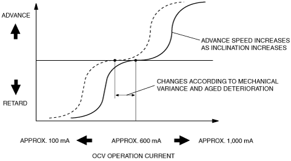

Technical Guide ➭ ENGINE ➭ CONTROL SYSTEM[L8, LF] ➭ VARIABLE VALVE TIMING CONTROL OPERATION [LF]
VARIABLE VALVE TIMING CONTROL OPERATION [LF]
id0140i7171345
• The PCM divides the oil control valve OCV drive range into four modes according to engine operation conditions. The OCV drive current is determined based on the target current calculated in each mode.
• When the following condition is met:
― Idle speed control feedback execution condition
• Cleaning mode is to remove foreign material in the OCV hydraulic passages.
• The target current in the cleaning mode is fixed at 100 mA or 1,000 mA, and a current of 100 mA and 1,000 mA flows to the OCV alternately at certain intervals. When 100 mA current flows to the OCV, hydraulic pressure is introduced to the retard chamber. When 1,000 mA current flows, hydraulic pressure is introduced to the advance chamber. After repeating this operation one time, foreign material that has penetrated the OCV is removed and the cleaning mode is completed.
• When any of the following conditions are met:
― Cranking
― Idling after completion of cleaning mode
― DTC stored for the following devices:
• ECT sensor
• CKP sensor
• CMP sensor
• TP sensor
• MAF sensor
• OCV
• Maximum cam retard mode stabilizes engine speed by maximally retarding the valve timing when the engine speed is low during idling.
• When the target current in the maximum cam retard mode is fixed at 100 mA. When 100 mA current is supplied, the OCV opens the hydraulic passage for the retard chamber and hydraulic pressure from the oil pump is introduced to the retard chamber. Because of this, the variable valve timing actuator is fixed at the maximum retard position (minimum overlap).
• Target valve timing and actual valve timing are almost the same.
• The feedback hold mode holds the valve timing by returning the OCV spool valve to the neutral position when target valve timing suitable for the engine operation conditions is obtained.
• Though the target current in the feedback hold mode is basically around 600 mA, feedback operation is performed at all times so that the present OCV drive current approaches the target current. Because the hold current changes due to mechanical variation between engines and deterioration due to aging on OCV internal parts, the PCM continues to learn the changing current (hold current learning value) to maintain the spool valve in the neutral position.
|
 amxzzn00000679 |
• Except during cleaning, maximum cam retard, or feedback hold modes.
• Feedback mode obtains valve timing suitable for engine operation conditions by performing the feedback operation so that present OCV drive current is set closer to the target current determined by the PCM according to engine operation conditions.
• Based on engine operation conditions, the target current is set between 100 mA (maximum retard) and 1,000 mA (maximum advance), using the neutral point of approx. 600 mA as a reference. Actually, the target current is calculated by subtracting the current necessary for obtaining the target advance/retard amount, using a reference at the hold-current learning value calculated from the neutral position of the spool valve.
Advance Spark Speed Correction
• If there is a large difference between the target valve timing and the actual valve timing, the target current correction is applied so that it is set closer to the target valve timing more quickly to raise the advance spark speed by advancing the spool valve initialization operation.
• The variable valve timing actuator advance spark speed increases as the hydraulic passage in the OCV widens and decreases as it narrows.
• The PCM controls current to the OCV to obtain optimum valve timing suitable for the engine operation conditions (target valve timing).
• The PCM compares target valve timing with actual valve timing, and feeds back the result to change valve timing smoothly.
• Determined according to engine speed and charging efficiency.
• Means present valve timing. Actual valve timing is calculated by adding the maximum cam retard learning value for energization from the value detected by the CMP and CKP sensors.
Cam maximum retard learning value
• Though the intake camshaft valve timing (including maximum retard position) is detected based on the difference between the signal from the CMP sensor and signal from the CKP sensor, the difference between the signals deviates due to the sensor installation condition. Because of this, the PCM stores the difference between the signal build-ups at the maximum OCV retard position to prevent deviation in valve timing detection.